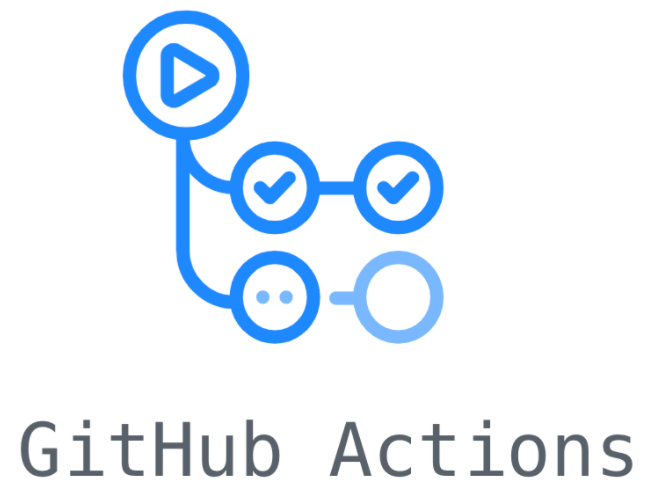
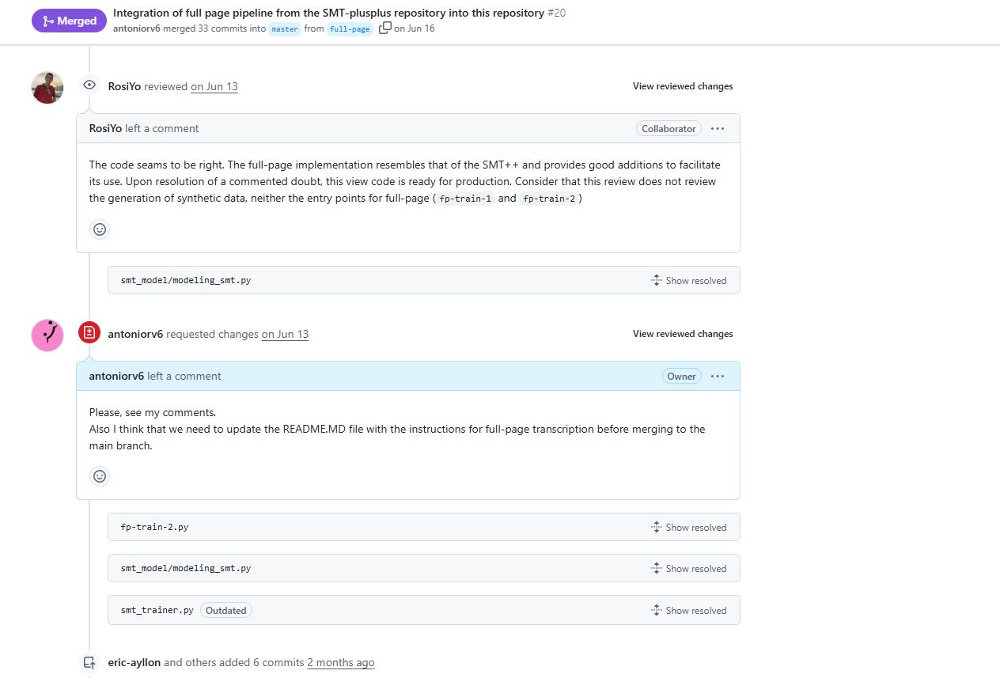

Despliegue e instalación
Conceptos fundamentales
Preliminares
Asumimos que…
- Trabajamos en equipo y no individualmente.
- Precisamos de disciplina y normas comunes para todos.
- El software se revisa y actualiza de forma periódica.
- La aplicación pasa por dos puntos: instalable y usable
Consejos al formar un equipo
- Buena comunicación y debate activo.
- Responsabilidad, disciplina y lidiar bien con el ego.
- Tareas bien definidas y división en sub-equipos por especialidades.
- Confiar en la automatización de tareas para control del software.
Desarrollo
El software es un proceso contínuo de desarrollo y evolución.
Desarrollo
El software es un proceso contínuo de desarrollo y evolución.
Está en constante actualización y despliegue.
Ramas de desarrollo
Independientemente del sistema de gestión de versiones, el software se concibe como un proyecto que se ramifica y converge.
Todo el desarrollo del proyecto parte de una rama principal
Ramas de desarrollo
Independientemente del sistema de gestión de versiones, el software se concibe como un proyecto que se ramifica y converge.
Todo el desarrollo del proyecto parte de una rama principal
Nota
Normalmente, a la rama principal se le suele llamar master o trunk.
Ramas de desarrollo
Independientemente del sistema de gestión de versiones, el software se concibe como un proyecto que se ramifica y converge.
Todo el desarrollo del proyecto parte de una rama principal
Tip
Debido a los problemas éticos que genera la palabra master, se está migrando hacia el uso del término main. No es necesario hacer este cambio, pero actualmente se acepta con buenos ojos si se adopta este término para definir a la rama principal de desarrollo.
Gestión de la rama principal
La rama principal siempre tiene los últimos cambios de nuestro software
Gestión de la rama principal
La rama principal siempre tiene los últimos cambios de nuestro software
El código que hay en dicha rama es el que está en producción.
Gestión de la rama principal
Eso no significa que sea la versión estable del programa.
Un gestor de la rama indica cuándo el código consituye una versión estable del software.
Gestión de la rama principal
Actualmente, es muy frecuente encontrar dos versiones del software cuando este se distribuye:
- Estable: Versión cerrada que, a priori, se encuentra en un estado apropiado para distribuir no tiene ningún bug reportado en la versión anterior.
- Latest: Última versión de la rama principal del proyecto, puede contener bugs y funcionalidades sin terminar (Feature flags).
Ejemplos
PyTorch: Versión estable y preview
NodeJS: Versión Long Term Support y latest
DevOPS
DevOps representa un conjunto de principios y prácticas. En la práctica, se resume en dos procesos clave:
- Continual Integration (CI)
- Continual Deployment (CD)
Este concepto ha revolucionado el desarrollo de software. Actualmente, constituye la base clave de los flujos de desarrollo modernos.
¿Qué es CI?
La Integración Continua (CI) es una práctica de desarrollo que consiste en integrar cambios en el código de forma automática y frecuente.
¿Cómo funciona?
Se fundamenta en la ejecución de pruebas automáticas cada vez que se realiza un cambio en la rama principal de un proyecto.
¿Qué es CD?
El Despliegue Contínuo (CD) es un enfoque de ingeniería de software en donde los cambios en el código se despliegan automáticamente a los usuarios después de superar pruebas automatizadas (CI).
En el tema 4 veremos cómo se automatiza el empaquetado y distribución de de una aplicación con CD.
¿Cómo lo podemos integrar?
Muchos de los servicios de control de versiones ofrecen integración con CI/CD.


En la asignatura aprenderemos a utilizar las GitHub Actions.
Estrategias de gestión de ramas
¿Cómo organizamos el desarrollo y la introducción de código y los despliegues en nuestros proyectos?
Estrategias de gestión de ramas
¿Cómo organizamos el desarrollo y la introducción de código y los despliegues en nuestros proyectos?
Existen múltiples estrategias de gestión y desarrollo:
P ej. Kernel de Linux: Ventanas de desarrollo y Release Candidates.
Estrategias de gestión de ramas
¿Cómo organizamos el desarrollo y la introducción de código y los despliegues en nuestros proyectos?
En este tema veremos cuatro estrategias:
- Git Flow.
- GitHub Flow.
- Trunk Based Development.
- Ship/Show/Ask.
Git Flow
¿Qué es Git Flow?
El flujo de trabajo de Git Flow es una metodología de desarrollo que se basa en el uso intensivo de ramas para gestionar el ciclo de vida del software.
Se trata de una metodología que se focaliza en el trabajo colaborativo y en la mantenibilidad del código. Lleva más de diez años siendo un estándar de-facto.
Git Flow: Ramas principales

Git Flow: Ramas principales
- Rama principal (main, master, trunk): Su propósito es contener el código que se encuentra en producción.
- Rama de desarrollo (develop): Código de pre-rpoducción con nuevas características que todavía deben ser aprobadas antes de entrar a la siguiente versión del software.
Git Flow: Ramas principales
Importante
En Git Flow, y prácticamente en todos los flujos de trabajo, un commit a la rama principal constituye una nueva versión de producción. Principalmente, esto se debe gracias al CI/CD, el cual se encarga de automatizar la creación de una nueva release del software cuando se detectan cambios en esta rama principal.
Git Flow: Ramas auxiliares
Además de la rama principal y de desarrollo, existen también unas ramas conocidas como ramas de apoyo.
A diferencia de las dos ramas principales, las ramas auxiliares siempre se borran una vez se han integrado en su rama objetivo.
Git Flow: Ramas auxiliares
Existen tres ramas principales de apoyo:
- Ramas de característica (feature)
- Ramas de lanzamiento (release)
- Ramas de arreglo de imprevisots (hotfix)
Ramas de feature
Las ramas de feature se dedican exclusivamente a la implementación de funcionalidades nuevas que estén planificadas en el proyecto.
Se crean y se fusionan en la rama de desarrollo.
Ramas de feature

Ramas de feature
Normalmente, las ramas feature se nombran con el prefijo feature- o feat/ para garantizar que la información persiste.
Ramas de feature
Normalmente, las ramas feature se nombran con el prefijo feature- o feat/ para garantizar que la información persiste.
Tip
Normalmente, se evita usar el fast-forwarding al hacer la fusión entre las ramas de característica y la de desarrollo. Esto se hace para, al menos, dejar en el historial de commits uno que contenga todos los cambios de la rama fusionada. De otra forma, es imposible seguir el flujo de trabajo de la rama de desarrollo. Siempre se prioriza la información a la limpieza
Ramas de release
Las ramas de release se crean para preparar un nuevo lanzamiento del código en la rama de desarrollo a producción.
Se crean desde la rama de desarrollo y se fusionan en la rama principal y en la de desarrollo
Ramas de release
Las ramas de release se crean para preparar un nuevo lanzamiento del código en la rama de desarrollo a producción.
Advertencia
Se asume que el código dentro de la rama de desarrollo se ha validado por el equipo de desarrollo.
Ramas de release
Las ramas de release se crean para preparar un nuevo lanzamiento del código en la rama de desarrollo a producción.
Importante
En las ramas de release se puede seguir trabajando para añadir pequeños cambios de última hora o parches a los errores que hayan surgido justo antes del lanzamiento. Sin embargo, esta práctica no es recomendable ya que interfiere con el papel de las ramas hotfix.
Ramas de release

Ramas de release
Normalmente, las ramas release se nombran con el prefijo release- o release/ para garantizar que la información persiste.
Ramas de release
Las ramas de release siempre llevan consigo un cambio en la etiqueta con la versión de nuestro código
Ramas de hotfix
¿Qué pasa si un usuario indica un fallo del programa en mi última versión, pero el desarrollo ya ha continuado?
Las ramas de hotfix se crean para solucionar y trabajar cambios imprevistos, como los bugs.
Se crean desde la rama principal y se fusionan en la rama principal y en la de desarrollo.
Ramas de hotfix
¿Qué pasa si un usuario indica un fallo del programa en mi última versión, pero el desarrollo ya ha continuado?
Las ramas de hotfix se crean para solucionar y trabajar cambios imprevistos, como los bugs.
Se crean desde la rama principal y se fusionan en la rama principal y en la de desarrollo.
Nota
Si una rama de release está activa, se realiza la fusión aquí en vez de la rama principal.
Ramas de hotfix

Ramas de hotfix
Normalmente, las ramas hotfix se nombran con el prefijo hotfix-<versión> o hotfix_<versión>/ para indicar en qué momento se solucionó el imprevisto.
Conclusiones sobre Git Flow
Git Flow es una estrategia muy popular dentro de la ingeniería del software.
- Aporta orden y coherencia al desarrollo del producto.
- Tiene reglas claramente definidas.
- Es interesante cuando el proyecto es grande y está fuertemente versionado.
Conclusiones sobre Git Flow
Por desgracia, no es una solución universal. Según Vincent Driesen (creador de la metodología):
…the most popular type of software that is being developed with Git is shifting more towards web apps … This is not the class of software that I had in mind when I wrote the blog post 10 years ago. If your team is doing continuous delivery of software, I would suggest to adopt a much simpler workflow instead of trying to shoehorn git-flow into your team.
Conclusiones sobre Git Flow
Por desgracia, no es una solución universal.
El desarrollo de software ha evolucionado mucho y, según el caso, Git Flow introduce mucha carga y complejidad al flujo de desarrollo. Asímismo, no está concebido (aunque es adaptable) para el CI/CD.
GitHub Flow
¿Qué es GitHub Flow?
GitHub Flow es un flujo de trabajo basado en ramas y Pull Requests. Se desarrolló por GitHub en 2011, pero ganó popularidad con el auge del CI/CD.
¿Qué es GitHub Flow?
GitHub Flow es un flujo de trabajo basado en ramas y Pull Requests. Se desarrolló por GitHub en 2011, pero ganó popularidad con el auge del CI/CD.
Se trata de una metodología que se centra en los despliegues regulares y la discusión/revisión contínua entre los desarrolldores. Es la metodología más popular en los proyectos open-source.
GitHub Flow: Simplificando el proceso
- Rama principal (main, master, trunk): Su propósito es contener el código que se encuentra en producción.
- Ramas auxiliares: Código de desarrollo que queremos integrar en la rama principal.
GitHub Flow: Simplificando el proceso
- Rama principal (main, master, trunk): Su propósito es contener el código que se encuentra en producción.
- Ramas auxiliares: Código de desarrollo que queremos integrar en la rama principal.
Tip
GitHub Flow hereda algunas características de Git Flow. Un ejemplo es la nomenclatura de prefijos de las ramas (como feature y hotfix), aunque no es estricto.
El proceso de GitHub Flow
- Crear una nueva rama: Esta rama se dedica exclusivamente al desarrollo de un aspecto específico de la aplicación.
El proceso de GitHub Flow
- Crear una nueva rama: Esta rama se dedica exclusivamente al desarrollo de un aspecto específico de la aplicación.
Nota
Si no eres propietario del repositorio, deberás realizar un fork. Dentro del proceso, esto se considera igual que crear una rama.
El proceso de GitHub Flow
- Crear una nueva rama: Esta rama se dedica exclusivamente al desarrollo de un aspecto específico de la aplicación.
- Realizar una Pull Request para fusionar las ramas: Aquí entra la discusión de cambios y revisiones por parte del equipo.
- Una vez aprobado por todos, se fusionan las ramas.
¿Qué es una Pull Request?
Pull Request (o PR) es una petición de cambios que se envía a través de una rama de GitHub. En concreto, la PR se envía desde una rama (source) para fusionar sus cambios en otra (target).
Su propósito es garantizar la revisión manual y la discusión fluida entre desarrolladores para incorporar cambios.
Ideas importantes de las Pull Requests
Los desarrolladores pueden comentar y exigir cambios.

Ideas importantes de las Pull Requests
Es posible ejecutar pruebas automáticas (CI).
Ventajas de GitHub Flow
- Reduce significativamente la complejidad de Git Flow.
- Integra de forma natural el CI/CD con pruebas automatizadas.
- Mantiene el orden y la comunicación entre los desarrolladores.
- Las discusiones se centralizan en un elemento: la Pull Request.
- Ideal para proyectos con despliegues contínuos.
Ventajas de GitHub Flow
Esta metodología es el estándar actual en proyectos de software de internet (webs) y de código abierto.
Desventajas de GitHub Flow
- Las ramas son muy libres, a veces es dificil seguir el proyecto bien.
- Dependes exclusívamente de un gestor de repositorios (GitHub, GitLab, Bitbucket…).
- A pesar de reducir significativamente la complejidad de Git Fow, se puede enredar igualmente.
Trunk Based Development
El gran problema de Git y GitHub Flow
Simplificando (aún más) el proceso
¿Cuántos de vosotros habéis pensado al iniciar un nuevo proyecto?
Paso de hacer ramas y merges, mejor hago commit de todo a master y ya.
¿Pereza? no, es Trunk Based Development
¿Qué es Trunk Based Development?
Trunk Based Development es una estrategia donde el mayor tiempo de desarrollo se concetra en la rama principal (main, master o trunk). Se evita, en la medida de lo posible, crear ramas auxiliares.
¿Qué es Trunk Based Development?
Nota
Esta estrategia es la más antigua de todas. Debemos considerar cómo trabajaban los equipos de desarrollo ántes de los gestores de control de versiones modernos.
¿Qué es Trunk Based Development?
Nota
A priori, esto puede parecer que es apto para proyectos pequeños. Sin embargo, empresas como Google o Meta integran Trunk Based Development para desarrollar muchos de sus monorepos.
Filosofía principal
Haz commit a la rama principal y hazlo con la mayor frecuencia posible con pequeños cambios
Filosofía principal
Haz commit a la rama principal y hazlo con la mayor frecuencia posible con pequeños cambios
Filosofía principal
Entonces… ¿tengo prohibido crear ramas?
Sí está permitido, pero éstas deben incorporar pocos cambios y ser efímeras en tiempo.
Requisitos para realizar Trunk Based Development
- Un buen sistema de CI con tests exhaustivos automatizados.
- Técnicas de desarrollo eficientes en equipo y constante comunicación.
- Flujo de commits constante para facilitar la integración.
- Rollbacks automatizados. Detección de errores a futuro.
- Todos los días son un día de despliegue.
Beneficios de Trunk Based Development
- Integración contínua y menos fricción
- Mayor automatización
- Despliegue a producción contínuo
Ship/Show/Ask
¿Qué es Ship/Show/Ask?
Ship/Show/Ask es una estrategia de ramas que combina la idea de crear Pull Requests (GitHub Flow) con la habilidad de seguir publicando cambios rápidamente (Trunk Based Development).
Fue desarrollada por Rousan Wilsenach en 2021.
¿Qué es Ship/Show/Ask?
Empezamos siempre con una rama principal (master, main o trunk).
A partir de ahí, cuando queramos introducir cambios, deberemos escoger una de tres opciones:
- Ship
- Show
- Ask
Ship
Ship
Realizar el cambio directamente a la rama principal
No esperamos revisiones de código, ni integración. Vamos directos a producción.
Ship
Realizar el cambio directamente a la rama principal
Advertencia
Que no haya revisiones de código no significa que en despliegue no se hagan las verificaciones pertinentes.
Ship
Pensado para:
- Cuando se añaden nuevas funcionalidades en un patrón establecido.
- Cuando se arreglan bugs menores.
- Actualización de la documentación.
- Mejora de código por feedback del equipo o la comunidad.
- Se añaden nuevos tests.
Show
Show
Se abre una Pull Request pero no se espera ni discusión ni revisión de código
Solamente buscamos validar la solución mediante los test y pruebas automáticas que tengamos diseñados.
Show
¿Puede haber discusión sobre los cambios realizados por parte del equipo?
Sí, pero solo después de haber hecho la fusión del Pull Request.
Show
Pensado para:
Principalmente dejar constancia para el aprendizaje futuro del equipo.
- Feedback a posteriori.
- Enseñar refactorizaciones o nuevos patrones en el código.
- Aprender de los errores y explicar cómo solucionarlos.
Ask
Ask
Se abre una Pull Request esperando discusión de nuestro equipo antes de fusionar.
En concreto, Ask se interpone a Show cuando existen dudas al proponer una solución o hay algún bloqueo y se precisa de ayuda.
Ask
Advertencia
La categoría Ask abre una vía de comunicación por parte del equipo. Sin embargo, eso no implica que se deba hacer una revisión de código salvo cuando se indica expresamente.
Ask
Pensado para:
Principalmente solucionar dudas y/o problemas en el desarrollo del proyecto.
- ¿Creéis que esto funcionará?
- ¿Cómo creéis que encaja este nuevo enfoque?
- No tengo claro cómo mejorar el código aquí
Las reglas de Ship/Show/Ask
La metodología cuenta con cinco reglas muy estrictas:
- Contar con un sistema de CI/CD fiable y rápido.
- La revisión/aprobación del código no debe ser un requisito para fusionar una Pull Request.
- Las Pull Requests las fusiona el desarrollador que las crea.
- Las ramas deben ser pequeñas y tener un tiempo de vida corto.
- Honestidad y buena comunicación.
Versionado de software
Etiquetando el software
Una cuestión que queda por comentar es cómo etiquetamos las releases de nuestro software.
Etiquetando el software
Una cuestión que queda por comentar es cómo etiquetamos las releases de nuestro software.
- Para los usuarios es importante, ya que saben qué versión emplean. Eso ayuda a conocer fallos o pedir mejoras.
- Para los desarrolladores es imporante, ya que identifican a qué código se refiere un informe de fallo o solicitud de cambio.
Etiquetas de versión del software
- Las etiquetas de versión no son más que un modo que tiene el fabricante de un software de identificarlo claramente.
- Las etiquetas de versión no tienen porqué estar formadas por números…
- Por tanto su significado depende de lo que el fabricante quiera.
Formato clásico
Se utiliza comunmente un formato de tres números: A.B.C. Conocidos como Mayor, Menor, Micro.
Formato clásico
Se utiliza comunmente un formato de tres números: A.B.C. Conocidos como Mayor, Menor, Micro.
- Si aumentamos el número
Mayor, se indica que el software sufre cambios relevantes
Formato clásico
Se utiliza comunmente un formato de tres números: A.B.C. Conocidos como Mayor, Menor, Micro.
- El número
Menorpuede ser par o impar.- Si es par, estamos modificando una versión estable del código.
- Si es impar, estamos modificando una versión de desarrollo del código.
Formato clásico
Se utiliza comunmente un formato de tres números: A.B.C. Conocidos como Mayor, Menor, Micro.
- El número
Microrepresenta un avance en la versión del númeroMenor.
Versionado semántico
Semantic Versioning (o SemVer) es un esquema de versionado diseñado para que los números de versión transmitan información clara sobre los cambios en un software. La especificación oficial está en semver.org.
Actualmente, casi todo el software se fundamenta en este tipo de etiquetado, ya que es muy claro y explícito.
Versionado semántico
La idea básica es que las versiones siguen el formato MAJOR.MINOR.PATCH
Versionado semántico
La idea básica es que las versiones siguen el formato MAJOR.MINOR.PATCH
PATCHse incrementa cuando solo hay cambios menores.- En concreto, se refiere a el arreglo de bugs.
Versionado semántico
La idea básica es que las versiones siguen el formato MAJOR.MINOR.PATCH
MINORse incrementa cuando se agregan nuevas funcionalidades retrocompatibles.- Todo el código existente sigue funcionando igual.
Versionado semántico
La idea básica es que las versiones siguen el formato MAJOR.MINOR.PATCH
MAJORse incrementa cuando se agregan cambios incompatibles con versiones anteriores.- Requiere que los usuarios del software revisen los requisitos y adapten su código.
Reglas adicionales importantes
Antes de la versión
1.0.0, todo se considera inestable (los cambios pueden romper compatibilidad en cualquier momento).Versiones pre-release se indican con un guion:
- Ejemplo:
1.0.0-alpha,1.0.0-beta,1.0.0-rc.1.
- Ejemplo:
Se pueden añadir build metadata con un
+:- Ejemplo:
1.0.0+exp.sha.5114f85. - No cambia la compatibilidad, solo agrega información.
- Ejemplo:
Desarrollo Colaborativo de Aplicaciones